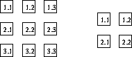
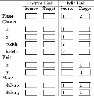

There are two planes given (fig.  ). To realize the links
). To realize the links
source: plane 1 (1,1), (1,2), (2,1) (2,2)
target: plane 2 (1,1)
source: plane 1 (1,2), (1,3), (2,2) (2,3)  target: plane 2 (1,2)
target: plane 2 (1,2)
source: plane 1 (2,1), (2,2), (3,1) (3,2)  target: plane 2 (2,1)
target: plane 2 (2,1)
source: plane 1 (2,2), (2,3), (3,2) (3,3)  target: plane 2 (2,2)
target: plane 2 (2,2)
between the two planes, the move data shown in
figure  must be inserted in the link editor.
must be inserted in the link editor.

First, the cluster (1,1), (1,2), (2,1) (2,2) is connected with the unit (1,1). After this step the source cluster and the target unit are moved right one step (this corresponds to dx = 1 for the source plane and the target plane). The new cluster is now connected with the new unit. The movement and connection building is repeated until either the source cluster or the target unit has reached the greatest possible x value. Then the internal unit pointer moves moves down one unit (this corresponds to dy = 1 for both planes) and back to the beginning of the planes. The ``moving'' continues in both directions until the boundaries of the two planes are reached.